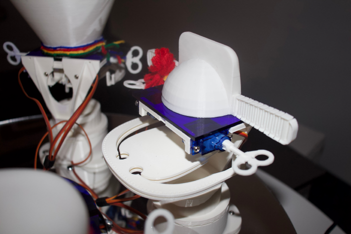
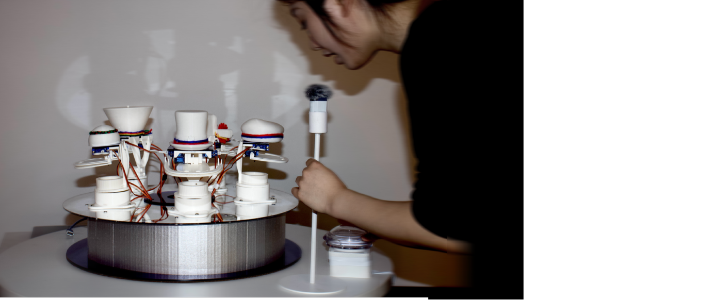
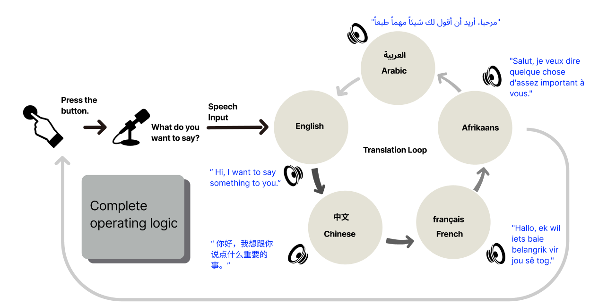

语义漂移接力 (Semantic Drift)
中文 (输入)
你好，我想跟你说点重要的事。
你好，我想跟你说点重要的事。
English
Hi, I want to say something important to you.
Hi, I want to say something important to you.
Français
Salut, je veux te dire quelque chose d'important.
Salut, je veux te dire quelque chose d'important.
...循环...
从噪音到细微差别

感官组件
3D 打印的生物形态耳朵，模拟 AI 在物理世界的倾听姿态。

物理交互
Arduino 控制的舵机根据语义理解的偏差程度产生相应的物理摆动。
技术系统架构图

接入 OpenAI 与 Google Translate API 构成的闭环翻译矩阵
总结 (Conclusion)
本项目通过捕捉 AI 翻译过程中丢失的细微差别，揭示了算法并非中立的工具。它在传递信息的同时也在重塑意义。我们将这种“错误”定义为一种数字时代的新诗学。
未来展望 (Future Work)
未来将尝试引入视觉生成模型，将文字的语义漂移实时转化为图像的形态演变，从而构建一个多模态的“误解机器”。